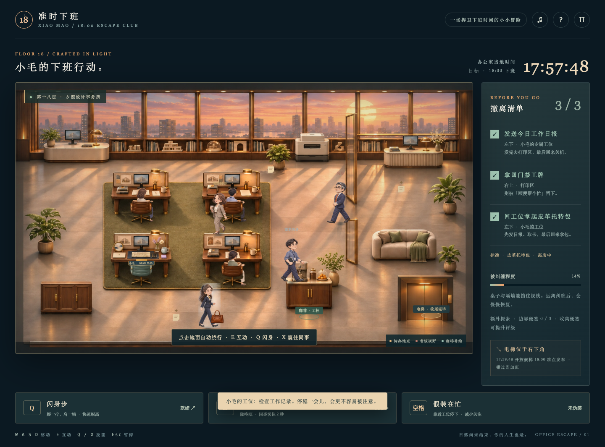
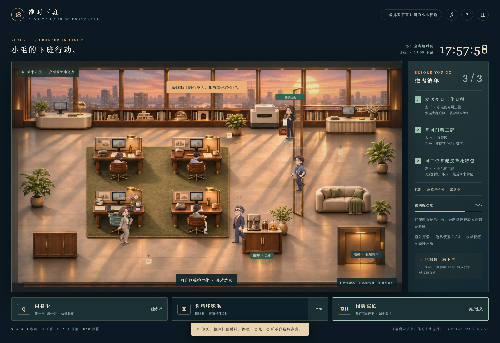
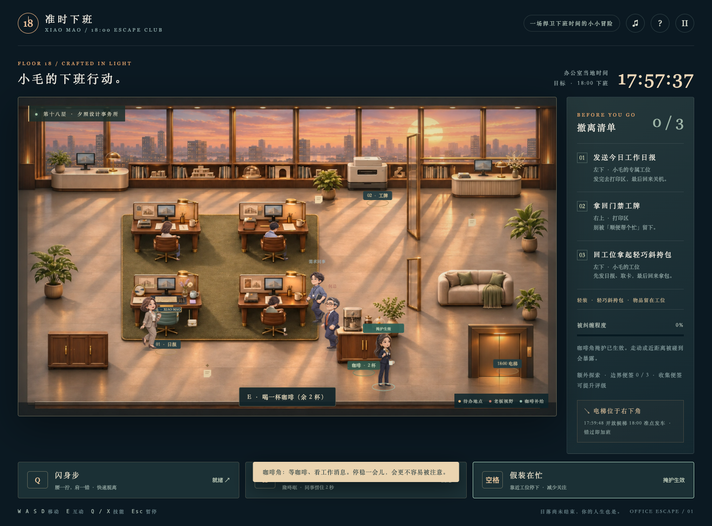

专属工位与坐班同事
左下是小毛的专属工位：奶油键盘、猫咪杯、小花瓶与青绿色椅子。其余三桌坐着办公的同事，会打字、抬头，也会被哆嗦毛打断。
发日报、取工牌，再回专属工位关机拿包。把今晚留给自己。


拖动滑块查看同一场景。截图均来自真实浏览器运行，未用原画替代游戏。
左下是小毛的专属工位：奶油键盘、猫咪杯、小花瓶与青绿色椅子。其余三桌坐着办公的同事，会打字、抬头，也会被哆嗦毛打断。
在工位、打印机或咖啡机旁停稳装忙，可建立隐蔽掩护。打印区手拿材料、咖啡角端杯看消息；移动解除，近距离会被识破。
空手、小斜挎、皮革托特、大号双肩，对应不同负担与存在感。四个模式都要最后回工位收尾，按包款独立记最高成绩。

皮革托特：拿包后慢约7%，更显眼；回工位拿包，再借掩护脱离。


约十秒无声录像：起步、停步、反向转身、闪身步、哆嗦毛与暂停。是二维序列帧表现，并非骨骼动画。
已真实运行150秒准点下班；四种包款逐一完成新任务流程并测量速度，验证坐班动作、两处掩护、近距离风险与无重影。详细结果见下方JSON。原生Safari/iOS、真人步态评价和持续性能仍待实机验收。